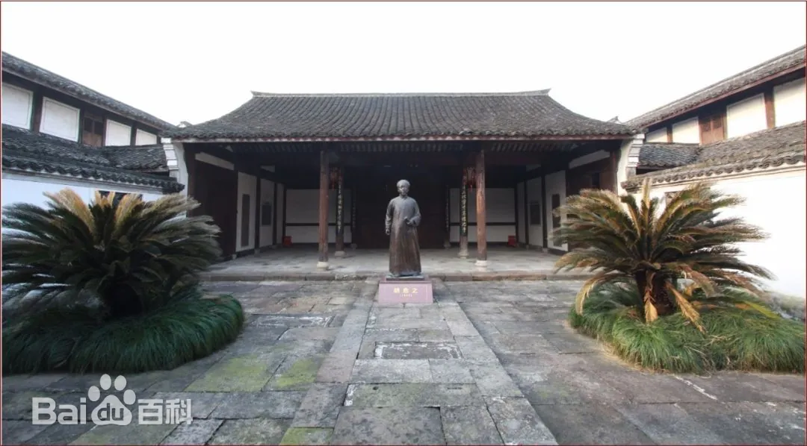
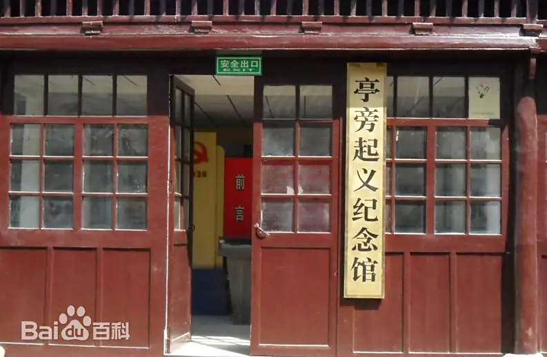

红色建政·为民初心主题线
路线概述
"红色建政·为民初心"主题线是一条聚焦中国共产党建政初心和为民服务宗旨的研学路线，通过实地考察宁波余姚横坎头村、绍兴上虞叶天底烈士纪念碑和台州三门亭旁起义纪念馆三个具有重要历史意义的地区，深入了解中国共产党在浙江的建政历程和为民初心的实践。
本路线将带领学员重温革命先辈的奋斗足迹，感受共产党人"为人民服务"的初心使命，培养爱国主义情怀和历史责任感，在实地考察中理解红色政权的建立和发展。
行程天数
3天2夜
途经地区
宁波 → 绍兴 → 台州
适合人群
中学生、大学生、机关干部
主题特色
建政初心、为民服务、红色政权
横坎头村位于宁波余姚市梁弄镇，是浙东抗日根据地的重要组成部分，被誉为"浙东红村"。这里是中共浙东区委、浙东行政公署、浙东游击纵队司令部等党政军机关的驻地，是浙东抗日根据地的政治、军事、经济和文化中心。
横坎头村保存了大量的革命遗址和红色文化资源，包括浙东区委旧址、浙东行政公署旧址、浙东游击纵队司令部旧址等。这里见证了中国共产党在浙东地区建立红色政权、开展抗日斗争的光辉历程，是了解中国共产党建政初心的重要场所。
互动体验
"红色政权"模拟建政
参与"红色政权"模拟建政活动，体验革命时期党政机构的运作，理解共产党建政的初心和使命。
"军民鱼水情"农耕体验
开展"军民鱼水情"农耕体验，参与根据地军民共同开展的农业生产，理解革命时期的军民关系。
叶天底烈士纪念碑位于绍兴市上虞区，是为纪念早期共产党员、革命烈士叶天底而建立的纪念碑。叶天底是中国共产党早期党员之一，曾任中共浙江省委委员，为浙江的革命事业作出了重要贡献。
叶天底烈士纪念碑不仅是缅怀革命先烈的场所，更是传承红色基因、弘扬革命精神的重要载体。通过参观学习，学员们将了解叶天底烈士的革命事迹和牺牲精神，感受共产党人为人民解放事业不懈奋斗的初心和使命。

互动体验
"烈士事迹"故事分享会
开展"烈士事迹"故事分享会，分享叶天底烈士的革命事迹，在交流中深化对共产党人初心使命的理解。
"红色誓言"重温活动
参与"红色誓言"重温活动，在烈士纪念碑前重温入党誓词或入团誓词，坚定理想信念。
亭旁起义纪念馆位于台州市三门县亭旁镇，是为纪念1928年发生的亭旁起义而建立的专题纪念馆。亭旁起义是中国共产党在浙江领导的第一次农民武装起义，建立了浙江省第一个苏维埃政权，被誉为"浙江红旗第一飘"。
纪念馆通过丰富的历史文物、图片和文献资料，全面展示了亭旁起义的历史背景、经过和意义，生动再现了中国共产党领导农民建立红色政权的光辉历程。学员们将通过参观学习，了解中国共产党在浙江建立红色政权的早期实践，感受共产党人为人民谋幸福的初心和使命。

互动体验
"红旗第一飘"情景再现
参与"红旗第一飘"情景再现活动，模拟亭旁起义的历史场景，体验红色政权的建立过程。
"苏维埃政权"文书体验
开展"苏维埃政权"文书体验，模仿苏维埃政府的文书工作，理解红色政权的运作方式。